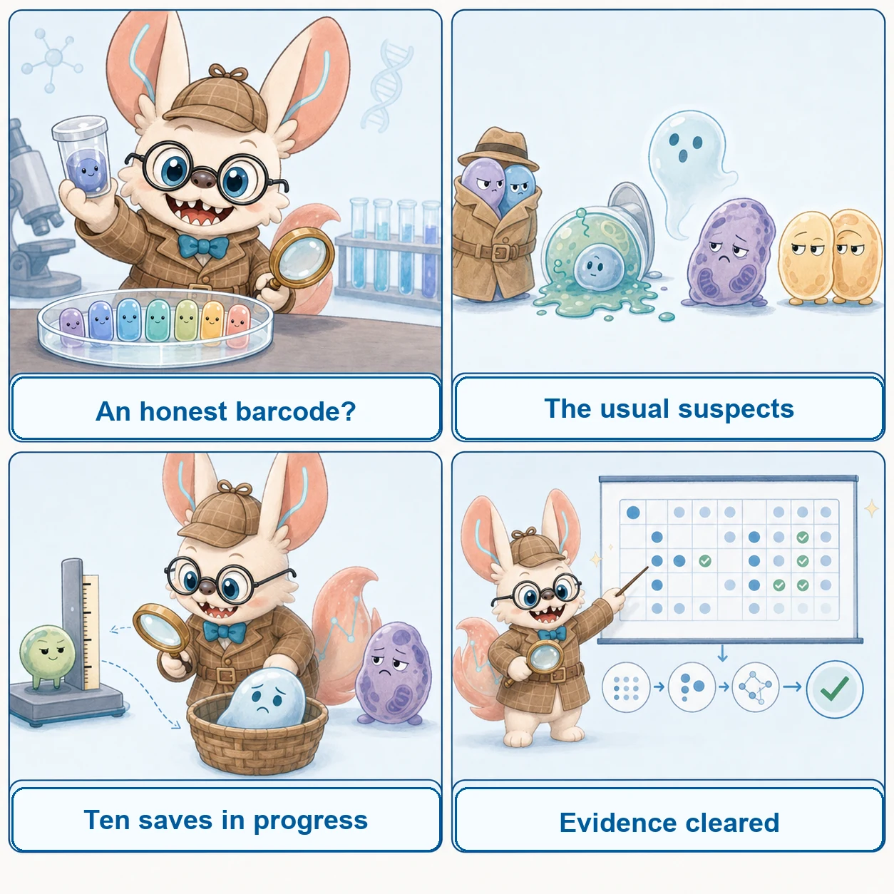
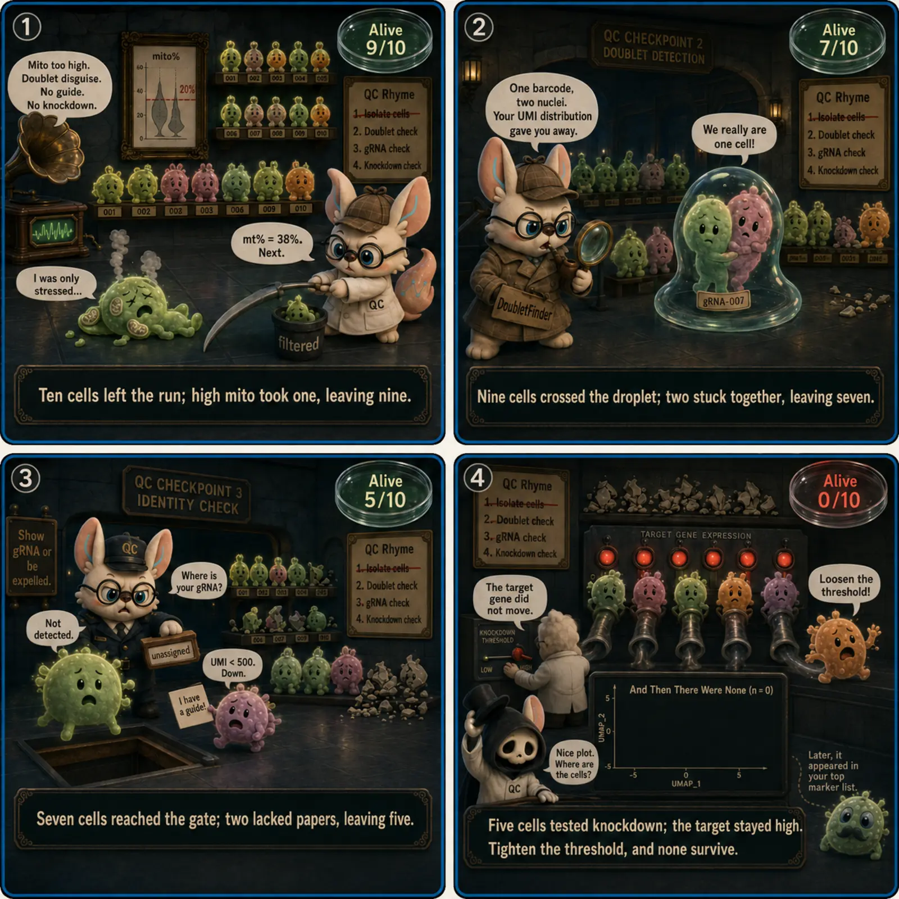

Canonical QC Order
Method catalog order ≠ execution order. The sections below this one are organized as a method taxonomy — grouped by what a tool does, not by when it runs. The backbone below is the actual dependency graph: which population and which count representation each step is allowed to consume. Skipping straight to "Doublet Detection" or "Ambient RNA" without this backbone is the single most common way a QC pipeline gets its execution order wrong.
The dependency graph
The pipeline is not strictly serial. Background-info-based ambient correction (SoupX-style, which needs the empty-droplet soup profile) and the cell-QC chain (cell calling → demultiplex → Gate 1 → Gate 2) are two parallel inputs that only converge at the ambient-correction step — treating the whole thing as one straight line is what makes "just run steps in card order" feel plausible when it isn't.
raw droplets
│
┌────────┴────────┐
│ │
background info cell calling
(empty-droplet / │
soup profile) demultiplex
│ │
│ Gate 1
│ │
│ Gate 2
│ │
└──────┐ ┌──────┘
↓ ↓
ambient correction
│
final annotation
│
lineage extraction
│
final analysis / benchmark freeze
│
┌──────────┼──────────┐
↓ ↓ ↓
PCA FM DE(There is an earlier, narrower freeze too — right after Gate 2, before ambient correction — that only decides which cells are eligible for artifact modeling. See "Two freezes, not one" below; the graph above collapses both into one node for brevity.)
(CellBender is deliberately not on this graph — see "The CellBender branch" below; it replaces conventional cell calling plus the "background info"-based ambient-correction branch with one joint step. Demultiplexing, Gate 1, and Gate 2 are unaffected — they still run downstream on CellBender's output.)
Same graph, as a linear walk-through
Useful for reading top-to-bottom in plain language, but remember: this reads as one line only because it picks a single path through the branching graph above — it is not evidence that every step is a hard serial dependency on the one before it.
RAW DATA
│
├─ FASTQ / raw droplet counts
│
▼
PROVENANCE
capture · channel · donor · sample
│
▼
CELL CALLING
Is the barcode a cell?
│
▼
DEMULTIPLEXING
SNG · DBL · AMB
│
▼
GATE 1
mild low-quality-cell QC
counts ↓ · genes ↓ · mito ↑
│
▼
GATE 2
per-capture doublet scoring
raw counts · full lineage context
│
▼
ARTIFACT-MODELING POPULATION FREEZE
confirmed doublet → remove
unresolved → retain + flag
(eligibility for ambient correction only —
NOT the final analysis population)
│
▼
AMBIENT CORRECTION
per capture · full lineage context
raw counts preserved
│
▼
FINAL ANNOTATION
harmonize lineage labels
│
▼
LINEAGE EXTRACTION
Platelet / Monocyte / target population
│
▼
FINAL ANALYSIS / BENCHMARK POPULATION FREEZE
same cells across models
│
├──────── PCA preprocessing
├──────── FM A preprocessing
├──────── FM B preprocessing
└──────── statistical-analysis preprocessingWhy this order?
- Cell calling precedes cell QC because empty droplets are not low-quality cells — they are not cells at all.
- Mild Gate 1 precedes doublet detection because extreme low-information cells distort transcriptomic neighborhoods, while aggressive upper-tail filtering can erase doublets.
- Doublet handling precedes DecontX because multiplets represent genuine cellular mixtures rather than ambient RNA.
- Final lineage extraction follows artifact modeling so doublet and ambient models retain the full capture context.
Gate 1 stays deliberately mild for two reasons that pull in opposite directions: too little Gate 1 lets extreme low-information cells distort the PCA/kNN geometry the doublet detector relies on; too much Gate 1 (especially on the upper tail) pre-deletes the very doublets Gate 2 is meant to catch. High counts/high genes are Gate-2 diagnostic evidence, not a Gate-1 deletion rule.
A metric is evidence. A decision is a policy applied to evidence.
A count, a MAD distance, a Scrublet score, a contamination fraction — these are diagnostics. They become a decision only after an explicit, named policy is applied (gate1_pass, confirmed_doublet, artifact_modeling_pass, final_analysis_pass). The most common QC bug in tutorials — including earlier versions of this one — is jumping straight from metric to deletion (adata[metric < threshold]) with no named decision column in between. The Hands-on section below models the evidence → decision separation explicitly.
The CellBender branch
CellBender does not slot into the same pipeline position as DecontX/SoupX — it is a clearly separate alternate branch off "raw droplets" in the dependency graph above, not a stage merged into the main chain. It replaces conventional cell calling and ambient correction only — not demultiplexing or Gate 1, which still run downstream of it:
CellBender path: raw droplets → CellBender joint cell/background inference → demultiplexing if applicable → Gate 1 → Gate 2 → final annotation. CellBender collapses conventional cell calling + ambient correction into one joint step; it does not bypass demultiplexing or Gate 1.
versus the conventional path: Cell Ranger filtered matrix → demultiplexing → Gate 1 → Gate 2 → DecontX/SoupX. Treat these as two alternative branches, not interchangeable steps in one universal order — running CellBender and then DecontX on its output double-corrects for ambient RNA.
Why ambient correction follows doublet handling, not the reverse
A doublet and an ambient-contaminated singlet are different generative models, and conflating them motivates the wrong step order:
- Doublet:
Xi ≈ XA + XB— both components are real cells captured together. - Ambient contamination:
Xi ≈ (1−ε)XA + εXsoup— the second component is extracellular background, not a second cell.
If DecontX (or SoupX) runs before doublet detection, a real doublet's second-cell signal can be misattributed to background contamination, and the corrected counts handed to the doublet detector no longer reflect the original capture geometry. For the DecontX-oriented workflow used here, doublet decisions are frozen before decontamination; SoupX and CellBender have method-specific dependencies described separately — SoupX's soup estimation draws on the raw, unfiltered droplet pool rather than obeying this same doublets-then-ambient ordering.
What matrix, cells, and grouping go where
| Step | Cells | Matrix | Grouping |
|---|---|---|---|
| Cell calling | candidate barcodes | raw integer counts | capture |
| Demultiplexing | called cells | assay-specific (genotype/HTO) | capture |
| Gate 1 | called / demuxed cells | raw integer counts | capture ± broad lineage |
| Scrublet / scDblFinder | Gate-1 retained, all lineages | raw integer counts | capture / channel |
| Doublet decision | same population | score + method-status flags | capture |
| DecontX | retained cells (post doublet-decision), all lineages | cell raw counts → corrected counts | capture |
| SoupX — soup estimation | all/raw droplets | unfiltered droplet matrix | capture |
| SoupX — correction | retained cells (post doublet-decision), all lineages | cell counts + estimated soup → corrected counts | capture |
| Final lineage annotation | QC-retained | corrected / appropriate expression | cohort / capture |
| Lineage extraction (e.g. Platelet-only) | annotated cells | corrected / appropriate expression | lineage |
| FM / model preprocessing | final benchmark cells | model-specific representation | model |
Two rules follow directly from this table: do not subset to the target lineage before Scrublet or DecontX unless the method specifically requires it (a monocyte is not a QC failure just because the final benchmark is platelet-only — it is valid background context for artifact modeling), and the unit of QC (capture/channel) and the unit of inference (donor/patient) can differ — cell QC determines which measurements are trustworthy, it does not turn cells into independent biological replicates.
Data & Provenance
Stage 0 — identity mapping. Before any QC decision, every barcode needs a resolved chain of custody. At minimum, store:
barcode → capture_id → channel_id → sample_id → donor_id → multiplexing_status → source_matrix → count_layerThis is especially important for public datasets, where several of these stages may already be baked into the deposited matrix and cannot be reconstructed after the fact.
Public-cohort provenance audit
For every external cohort, audit what was already done upstream before deciding what you need to (re)do. The governing principle: start from the earliest recoverable stage; never pretend an unavailable upstream stage was reconstructed.
| Stage | Available? | Already done upstream? | Re-done by us? | Evidence |
|---|---|---|---|---|
| Raw droplets | yes / no | — | — | raw_feature_bc_matrix present? |
| Cell calling | yes / no | authors / us | yes / no | filtered matrix cell count vs. paper |
| Demultiplexing | yes / no | authors / us | yes / no | SNG/DBL/AMB column present? |
| Basic QC | known / unknown | authors | yes / no | methods section thresholds, if stated |
| Doublet handling | yes / no | authors / us | yes / no | doublet_score / predicted_doublet column present? |
| Ambient correction | yes / no | authors / us | yes / no | decontX/SoupX layer or contamination column present? |
| Raw integer counts retained | yes / no | — | — | adata.X or a layer is verified non-negative, integer-like |
If cell calling was performed upstream and only a filtered matrix was deposited, say so explicitly rather than treating the filtered matrix as though it were raw droplets. Re-running doublet detection on a public deposit that has already had doublets removed is a distinct methodological decision — not a routine rerun — because the residual doublet population and its expected rate are no longer the same as an unfiltered capture.
Cell Calling
Cell calling answers one question: barcode → cell or not-cell. It precedes cell-level QC — a barcode with almost no transcripts is not a low-quality cell, it is an empty droplet that never held a cell (see Guest 10 · Empty Droplets & Cell Calling in the parable below). Conventional cell calling (CellRanger's default, EmptyDrops-style methods) operates on the raw droplet matrix and outputs the filtered/called matrix that Gate 1 then consumes. CellBender replaces this step with a joint cell-calling + ambient-correction model — see the CellBender branch in the Canonical QC Workflow above; the two are alternative branches, not sequential steps.
Demultiplexing
For genetically or hashtag-multiplexed captures, demultiplexing resolves each called cell to one of three states before any transcriptome-based doublet detection runs:
called cells → donor assignment → SNG (singlet) · DBL (cross-donor doublet) · AMB (ambiguous)This step matters for Scrublet/scDblFinder calibration, not just sample bookkeeping: if genotype/HTO demultiplexing has already removed cross-donor doublets, the residual doublet prevalence a transcriptome-based detector should expect is no longer the raw loading-chart rate —
P(doublet | survived demultiplexing) ≠ P(doublet)
Scrublet should not be taught, or run, as though it always sees the original, unfiltered doublet population.
And Then There Were Some · Ten Guests
Agatha Christie's And Then There Were None (1939): ten guests on Soldier Island, judged one by one against a nursery rhyme. Here each guest stands for one quality-control theme — a failure mode, not a step in a pipeline. The ten guests are failure modes, not workflow order: see the Canonical QC Order section above for the actual execution sequence. (Classic-novel spoilers inside.)

MAD Filtering
Each death on the island follows the nursery rhyme exactly — one rigid verse applied to ten very different people, and the innocent die on schedule.
Let the data call the outlier. Good QC is not about choosing arbitrary cutoffs — it is about letting the data identify outliers for you, with Median Absolute Deviation instead of one rigid line for every sample.
Reference Optimization
Every guest trusted the invitation because it came signed by an old acquaintance. Nobody checked the reference — and it cost them everything.
Start from the right map. Start with the right gene annotations and transcriptome references to ensure accurate quantification — a wrong reference poisons every count downstream.
Doublet Detection
The killer is not an intruder; it is one of the guests, smiling at the dinner table under a borrowed identity.
Catch the borrowed identity. Identify droplets that accidentally captured two or more cells before they distort biological interpretation.
Ambient RNA Removal
One by one the guests are poisoned — the danger was dissolved in what everyone at the table drank and breathed.
Clean the scene. Remove unwanted background transcripts to improve the signal-to-noise ratio.
Off-Target / Non-Target Lineage Cells
Each guest was lured to the island because of a hidden past — but a guest with a past is not automatically the killer. Most of them simply don't belong in this story.
Wrong story, not a bad witness. A monocyte is not a QC failure just because the target population is platelets — it's a valid cell that belongs to a different lineage. This extraction happens late, after doublet handling and ambient correction, using the full-lineage context; it is not a generic early QC step, and it should never be confused with ambient (molecular) contamination.
Feature Selection & Dimensionality Reduction
Solving the case means stripping ten suspects, ten stories, and a room full of props down to a single thread of truth.
Keep the signal, cut the noise. Preserve meaningful biological variation while reducing noise and complexity.
Statistical Robustness & Standardization
Every step on the island is executed the same way, in the same order, by the same verse — a chillingly reproducible method.
Make it reproducible. Apply scalable, reproducible methods that make downstream results more reliable.
Batch Effects
A storm cuts the island off from the mainland. Everything the guests do is shaped by where they are, not who they are.
Check the weather before blaming the guests. The island is the batch: dramatic structure that is circumstance, not biology — handle it with integration-aware QC.
Batch Mishandling
Terrified, Vera shoots Lombard on suspicion — an innocent man dies because someone acted on a wrong guess. Mishandled suspicion kills.
Wrong correction convicts the innocent. Over-correct batch effects and you erase real biology; under-correct and the island's ghosts keep testifying as fake structure. Correct the right covariate, and only that one.
Empty Droplets & Cell Calling
Ten strangers arrive invited by "U.N. Owen" — a name on the guest list with no one behind it, because the host never existed.
A name is not a guest. Barcodes with almost no transcripts are invitations with no one behind them. Cell calling checks whether each guest actually showed up.
"And then there were none" is the warning, not the goal: ten guests, zero executions — the matrix that enters the model is the witnesses who survived cross-examination.
Gate 1 — Cell Quality & QC Pipelines
Gate 1 is the mild, capture-aware cell-quality pass described in the Canonical QC Workflow: lower-tail counts/genes, upper-tail mito — diagnostics first, a named gate1_pass decision second. The frameworks below implement Gate-1-style filtering (and more) end-to-end.
SCTK (singleCellTK)
Comprehensive R/Bioconductor pipeline integrating 7 doublet detection and 3 decontamination algorithms into a unified framework. Features automated parameter optimization, consensus-based filtering, and supports both interactive (Shiny GUI) and command-line workflows.
Gate 2 — Doublet Detection
What a doublet is — and how simulation catches it
Two cells captured in one droplet share a barcode, so they look like a single cell with a blended profile. Detectors spot them by simulating artificial doublets and asking which real cells resemble them. Detection is easier for heterotypic doublets (two different cell types) than homotypic ones (two cells of the same type look like one, only bigger) — so a low predicted-doublet rate does not imply a low true physical multiplet rate.
Key insight: tools like Scrublet and DoubletFinder generate synthetic doublets by combining profiles from pairs of observed cells, embed everything together, and score each real cell by how many simulated doublets sit nearby. Cells in dense simulated-doublet neighborhoods are flagged — the flag then feeds a separate freeze/removal decision, not an automatic deletion.
DoubletFinder
Identifies doublets by creating artificial doublets (pK-NN approach) and measuring proximity in gene expression space. Features parametric parameter sweeping (pK/pN optimization) for dataset-specific calibration. Integrated into Seurat workflows.
Scrublet
Python-based doublet detection using simulated doublet enrichment analysis. Computes doublet scores based on k-nearest neighbor density in PCA space. Fast, scalable, and well-integrated with Scanpy ecosystem.
scDblFinder
Bioconductor doublet detector that performed strongly in comparative benchmarks across multiple human and mouse datasets. Uses a random forest classifier on cluster-aware simulated doublets — sampling cell pairs in proportion to observed cell-type frequencies — which handles imbalanced compositions better than uniform-random simulation. Native SingleCellExperiment integration, automatic parameter tuning, and multi-sample batch support provide convenient multi-sample handling in Bioconductor single-cell workflows.
- Strong AUPRC in head-to-head benchmarks across diverse tissue types — but relative performance vs. DoubletFinder/Scrublet varies with tissue composition, homotypic burden, and capture size, so treat this as one strong option for R/Bioconductor users rather than a universal ranking
- Cluster-aware simulation: proportional sampling from each cluster avoids the detection bias of rare cell-type doublets that afflicts uniform-random methods
- Multi-sample mode:
scDblFinder(sce, samples="sample_id")runs each sample independently then pools scores — essential for batch QC
Ambient RNA & Contamination Removal
DecontX applies directly to the retained cell matrix after doublet handling, in this workflow's doublet-then-ambient order — see why ambient correction follows doublet handling. SoupX instead estimates its ambient/"soup" profile from the raw, unfiltered droplet pool, then uses that estimate to correct the doublet-cleared, full-lineage cell population — its soup estimation step does not itself obey the doublets-then-ambient cell-population ordering, even though the correction it applies does. CellBender is a separate branch that jointly performs cell calling and ambient correction on the raw droplet matrix; it is not interchangeable with running DecontX (or SoupX) on an already cell-called matrix.
SoupX
Estimates and removes ambient RNA contamination using empty droplet profiles. Uses cluster-specific marker genes to estimate contamination fraction per cell. Works with 10x Genomics data and integrates with Seurat.
DecontX
Bayesian method for decontamination using variational inference. Models each cell's expression as a mixture of native and contaminating RNA, and estimates a per-cell contamination fraction and corrected counts. Can infer latent cell populations rather than requiring externally supplied clustering as a mandatory preprocessing step — though cluster labels can also be supplied if available.
CellBender
PyTorch VAE with negative-binomial likelihood that jointly infers the true expression profile of each cell and the ambient RNA contamination fraction from the raw unfiltered droplet matrix. Unlike SoupX and DecontX, CellBender simultaneously performs cell calling (distinguishing real cells from empty droplets) and ambient correction in a single pass — an attractive joint-modeling approach when raw unfiltered droplets are available and joint cell/background inference is appropriate. Used in several large-scale single-cell processing workflows.
- Removes 30–70 % of ambient contamination in high-soup datasets; substantially improves cell-type marker specificity and reduces spurious DE calls
- Joint cell-calling + ambient removal: no pre-clustering or empty-droplet pre-filtering required; outputs a corrected, cell-called count matrix directly
- GPU-accelerated inference (~30 min for 50 K cells on a single GPU); CPU mode available;
cellbender remove-backgroundCLI integrates directly with 10x output directories
scCLEAN
Molecular (wet-lab) method, not a computational tool. Single-cell CRISPRclean uses CRISPR/Cas9 to target and remove highly abundant, uninformative transcripts (both genomic and transcriptomic) from prepared cDNA before sequencing, redistributing roughly half of reads toward lower-abundance transcripts. Improves detection of rare/low-expression genes in a way that cannot be matched by deeper sequencing alone; complements — rather than replaces — computational decontamination.
Ambient RNA Analysis (snRNA-seq)
Comprehensive analysis of ambient RNA contamination specifically in single-nucleus RNA-seq (snRNA-seq). Provides guidelines for contamination assessment and benchmarks decontamination tools for nuclear preparations.
Feature Selection & Dimensionality Reduction
Layer III — downstream preprocessing, not cell QC. These methods select or transform features for a QC-retained population; they are not a substitute for the identity/QC steps in the Canonical QC Order. See also Metacell & Statistical Methods below, which sits in the same downstream layer.
DELVE
Dynamic feature selection method that identifies genes with coherent expression patterns across local cell neighborhoods. Uses Laplacian scores to select features that capture continuous biological processes like differentiation trajectories.
Foundation Models for Single-Cell Analysis
Layer III — downstream preprocessing, not a QC stage. Foundation models consume the same QC-retained biological cells that any other analysis does; a model's own input contract (tokenization, normalization) runs after the canonical identity/QC backbone, never before it decides which cells pass QC.
scPRINT
Large foundation model pre-trained on 50M+ cells for diverse single-cell tasks. Provides cell and gene embeddings enabling zero-shot annotation, denoising, and batch correction. Supports multi-task learning across preprocessing applications.
SIGnature
Applies gradient-based attribution methods (Integrated Gradients, Input×Gradient, DeepLIFT) to scRNA-seq foundation models to score per-gene importance at the single-cell level. Attribution scores are strikingly robust to the technical artifacts that QC tries to manage: they correlate far less with per-cell UMI counts and library complexity than raw expression, automatically demote ribosomal and mitochondrial genes, and remain 93% stable under 50% simulated dropout. This makes SIGnature's gene-importance signal substantially less confounded by sequencing depth, dropout events, and ambient contamination than log-normalized counts alone.
- Attributions promote cell-type marker genes and lineage TFs (GATA3, RORC, FOXP3) while demoting ribo/mito genes vs expression (Wilcoxon P<0.01)
- Top-ranked genes 93% stable under 50% dropout simulation — robust to the very missingness QC filters aim to reduce
- Scales to ~22 million cells / 412 studies in minutes; enables large-scale QC-aware gene-program discovery
Metacell & Statistical Methods
MetaQ
Metacell inference via deep single-cell quantization. Quantizes cells into a discrete codebook where each entry (a metacell) can reconstruct the similar cells it represents, reducing complexity from exponential to linear with constant memory. Scales to arbitrarily large datasets and supports both uni- and multi-omics data while preserving biological heterogeneity.
Data Repositories & Standardization
Part of the Method Library — for a full index of every method on this page including the ones above (doublets, ambient RNA, features, foundation models), see the Quick Reference: Choosing the Right Tool section further down the page.
scBaseCount (formerly scBaseCamp)
AI agent-curated, continually expanding repository — now over 500M uniformly processed cells across 27 organisms and 75 tissues (the largest freely accessible single-cell collection). An AI agent (SRAgent) automates dataset discovery and metadata extraction from the SRA, and the scRecounter Nextflow pipeline performs standardized reprocessing. Released as part of the Arc Virtual Cell Atlas. Note: first circulated under the name "scBaseCamp" (230M cells); later renamed scBaseCount as it expanded.
Perturb-seq QC — CRISPR Screen-Specific
STANDARD scRNA QC
↓
QC-retained cells
↓
PERTURBATION-SPECIFIC QC
guide identity · coverage · efficacy · escape status · control quality
↓
perturbation inferenceWhy standard scRNA-seq QC is necessary but not sufficient
Perturbation-specific QC extends the standard pipeline — it does not replace or reorder it. The same QC principles apply, but thresholds must remain experiment-aware and must not erase genuine perturbation-induced phenotypes: a perturbation can legitimately alter RNA content, mitochondrial programs, and cell state, so a threshold tuned on unperturbed data can wrongly delete a real perturbation effect. Every barcode still needs to pass Gate 1/Gate 2/ambient checks first. What changes is that each surviving cell additionally carries a perturbation identity: which guide RNA(s) it received. Poor perturbation QC inflates both false negatives (real effects missed because escape cells dilute the signal) and false positives (guide-unrelated technical variation misread as a perturbation effect). The five challenges below are unique to CRISPR-based designs and require targeted QC steps that standard pipelines do not implement.

Was the right guide called?
The feature barcode (FB) library captures guide RNA UMIs alongside gene UMIs. Cells with too few guide UMIs cannot be confidently assigned — these "unassigned" cells should be excluded from perturbation analysis but retained for NT-pool QC checks.
Key metric: guide assignment rate. A low-rate sample often signals failed guide library capture or a mismatched sample index. Illustrative starting points only — >85 % of QC-passing cells and a minimum guide UMI threshold of ≥5 (Cell Ranger default, raised to ≥10 in high-ambient experiments) — the right thresholds depend on assay chemistry, guide library, and sequencing depth; use the assay/caller-specific assignment model rather than a fixed cutoff.
One cell, two identities
In low-MOI designs (<0.3), multi-guide calls are elevated evidence of a possible doublet — two cells sharing one barcode — but not a guaranteed one: guide-calling errors and ambient guide-RNA signal can also produce a multi-guide call. In high-MOI combinatorial screens, a single cell intentionally carries multiple guides. Standard doublet detectors cannot distinguish these cases from transcriptome data alone.
Low-MOI design: treat >1 called guide as evidence requiring interpretation alongside standard doublet detection, not an automatic doublet call on its own. High-MOI design: allow multi-guide cells, but verify each guide combination has enough representative cells (illustrative starting point: ≥5) before testing interactions.
Do you have enough cells per guide?
Illustrative examples, not requirements: DE methods often need on the order of ≥15–25 cells per guide for basic analysis, and ≥50–100 cells per gene target (across multiple guides) for robust effect detection — but required power depends on effect size, dispersion, design, and the number of donors/cells, not a fixed count. Genome-scale screens at 3–5 cells/guide are common — those guides are underpowered and should be flagged as inconclusive rather than reported as non-hits.
Action: after guide assignment and QC, compute coverage with adata.obs["guide_id"].value_counts(). The <10-cell / <20-cell flags below are heuristic starting points; get a principled, design-specific power estimate from SCEPTRE's run_power_check() rather than a fixed number.
Did the guide actually silence the target?
Not all cells in a guide-assigned population achieve efficient silencing — "escape" cells express the target gene at near-normal levels despite carrying the guide. Pooling perturbed and escape cells dilutes effect sizes and generates a spurious intermediate phenotype between perturbed and NT.
Knockdown score (a standardized effect size in SD units, not a percent reduction): (NT median − guide median) / NT SD for the target gene (log1p-normalised). A score below roughly 0.5 SD is an illustrative heuristic for flagging guide inefficiency, not a fixed requirement. Use Mixscape to classify each cell's perturbation-response status within the guide pool — escape/non-perturbed cells are then excluded from the analysis population that assumes they were silenced, rather than discarding the entire guide or treating the classification as a blanket deletion rule.
Are your controls actually unperturbed?
Non-targeting (NT) control cells are the baseline for every downstream comparison. If NT cells are contaminated by guide RNA ambient from the library prep, or if they cluster separately from untreated cells for a technical reason, every comparison built on them is biased.
Three checks: (1) inspect whether NT-cell structure is associated with batch, using quantitative and design-based diagnostics alongside any embedding — a mixed-looking UMAP is not proof that batch was corrected, and separation is not proof that it wasn't. (2) NT cells should not have elevated doublet scores on average. (3) NT target-gene expression should match an untreated baseline. If batch is a relevant nuisance factor and is estimable separately from perturbation, include it as a covariate in the DE model; if a guide appears in only one batch, guide and batch are confounded and no statistical adjustment can separate them.
Perturb-seq QC Metrics at a Glance
| QC Metric | Standard scRNA-seq | Perturb-seq Specific Action | Target / Flag |
|---|---|---|---|
| Cell QC (genes, counts, % mito) | MAD-based per sample | Same — also run per perturbation group post-assignment to detect guide-specific QC artifacts | Per-sample MAD thresholds |
| Doublet detection | Scrublet / scDblFinder | Rate may be elevated by high-throughput loading, not because it's Perturb-seq per se. Multi-guide cells confound standard detectors in high-MOI designs — validate separately | Derive expected_doublet_rate from the actual loading/capture design, not a fixed number |
| Guide assignment rate | N/A | % cells with ≥1 guide called above UMI threshold after standard QC | Illustrative, not universal — use assay/caller-specific thresholds |
| Multi-guide rate | N/A | % cells with >1 guide called (low-MOI = doublet proxy; high-MOI = expected) | <5 % in low-MOI; MOI-dependent in combinatorial |
| Cells per perturbation | N/A | Cell count per guide after all QC steps; track at each filtering stage | Illustrative heuristics only (≥15 cells/guide; ≥50/gene target; flag <10) — get the real number from a design-specific power analysis |
| Target gene knockdown score | N/A | (NT median − guide median) / NT SD for the target gene (log1p) — a standardized effect size in SD units | Illustrative heuristic: ≥0.5 SD (not "≥50 % reduction" — a different quantity); below this → Mixscape or exclude |
| Escape / non-perturbed fraction | N/A | % cells in guide pool classified as "NP" (not perturbed) by Mixscape LPS | Report per guide; classification flags analysis population, not an automatic guide-wide exclusion |
| NT control batch structure | N/A | inspect NT-cell association with batch using quantitative + design-based diagnostics, not embedding mixing alone | Diagnostic; adjust for batch in the DE model when estimable, not by declaring the embedding "fixed" |
Mixscape (Seurat)
Seurat-native method for distinguishing cells that were truly perturbed from those that escaped silencing within the same guide-assigned population. Estimates a per-cell Local Perturbation Score (LPS) — a perturbation signature computed relative to local control-cell neighborhoods — then fits a Gaussian mixture model to classify cells as "perturbed", "NP" (non-perturbed / escape), or ambiguous. This classification defines which cells enter differential analysis as perturbed, substantially improving signal-to-noise in pooled CRISPR screens.
- LPS is a per-cell knockdown proxy that is independent of target gene expression — works even for genes with sparse detection or high dropout
- Mixture model classification enables principled escape-cell exclusion from the perturbed analysis population without discarding the entire guide — a guide with 40 % escape cells still contributes the 60 % perturbed cells to DE testing
- Available as
RunMixscape()+MixscapeQC()in Seurat v4+; also demonstrated on multimodal Perturb-CITE-seq (Frangieh et al., Nat Methods 2021)
SCEPTRE
R framework designed specifically for the calibration and power challenges of single-cell CRISPR screens. Tests perturbation-to-gene associations while controlling for guide-cell technical covariates; provides calibration diagnostics and per-perturbation power estimates. The only tool that formalises power analysis at the guide level — identifying underpowered perturbations before downstream analysis rather than after, and distinguishing them from true non-hits.
- Calibration-first testing: uses negative control guides to empirically calibrate the null distribution, controlling type I error regardless of model mis-specification or cell-type composition
- Per-perturbation power analysis:
run_power_check()identifies underpowered guides (n < required cells) before hypothesis testing and flags them for additional data collection - Handles both low-MOI and high-MOI designs; supports paired on-target and distal guide–gene (eQTL-style) tests; scales to genome-wide screens (>10,000 guides)
scPerturb
Harmonized collection of 44 single-cell perturbation datasets (2.5 M+ cells) in standardized AnnData format with unified metadata fields: perturbation, perturbation_type, dose_value, nperts, and perturbation_name. Use as a benchmark reference to validate that your own guide assignment rates, coverage distributions, and effect sizes are within range of published experiments in the same cell type — providing a sanity check that is otherwise absent from single-experiment QC.
- 44 datasets spanning CRISPR KO, CRISPRi, drug treatments, and genetic variants across 32 cell types — the largest harmonized perturbation benchmark available
- E-score (perturbation strength) and D-score (dataset quality) metrics enable cross-study QC benchmarking without re-running analyses from scratch
- Ships with 10 tutorial notebooks for common analysis patterns; full dataset available at perturbdb.de
Step-by-Step Perturb-seq QC Workflow
- Standard cell QC first — independently per sample/batch. Run MAD-based filtering on
n_genes_by_counts,total_counts, andpct_counts_mtbefore any perturbation-level analysis. Remove QC-failed cells before computing guide assignment statistics — including them inflates the "unassigned" rate artificially. - Doublet detection with an expected rate derived from the actual loading design. High-throughput Perturb-seq loading (8,000–20,000 cells per channel) can push the doublet rate up, but that follows from the loading/capture design, not from "being Perturb-seq" — derive
expected_doublet_ratefrom your own 10x loading chart, not a fixed universal number. In multi-guide high-MOI designs, validate that doublet calls are not systematically enriched in multi-guide cells before removing them — the two signals are confounded. - Call guides from the feature barcode (FB) matrix. Cell Ranger
multipipeline output: loadcrispr_analysis/protospacer_calls_per_cell.csv. Illustrative UMI thresholds only (≥5 standard, ≥10 high-ambient) — use the assay/caller-specific assignment model for the actual cutoff. For low-MOI: assign top guide by UMI count; for high-MOI combinatorial: assign all guides above threshold per cell. - Compute guide assignment statistics. Calculate: (a) assignment rate — % cells with ≥1 called guide; (b) multi-guide rate — % cells with >1 guide; (c) cell counts per guide. Flag samples with an unusually low assignment rate or elevated multi-guide rate (illustrative, not universal, thresholds) for technical review.
- Check perturbation coverage. Build a cell-count-per-guide bar chart sorted descending. The <10-cell / <20-cell flags below are illustrative heuristics, not requirements — power depends on effect size, dispersion, design, and donor/cell counts. Run SCEPTRE
run_power_check()for a principled, design-specific per-guide power estimate rather than relying on a fixed cell count; flagged guides are excluded from downstream testing but kept in AnnData. - Assess target gene knockdown efficiency. For each CRISPRi/KO guide, compute KD score = (NT median − guide median) / NT SD on log1p-normalised target gene expression — a standardized effect size in SD units, not a percent reduction. Visualise as a ranked bar chart. A KD score below roughly 0.5 SD is an illustrative heuristic for "consider Mixscape," not a hard requirement — for guides near or below it, run Mixscape (
RunMixscape()in Seurat) to classify each cell's perturbation-response status within the guide pool, then use that classification to define the analysis population rather than discarding the entire guide. - QC the NT controls. Confirm: (a) NT-cell structure is not associated with batch, using quantitative/design-based diagnostics alongside any embedding — mixing in a UMAP is not proof of successful correction, nor is separation proof that correction failed; (b) NT cells do not have elevated doublet scores on average; (c) NT target-gene expression matches an untreated baseline. If batch is estimable separately from guide identity, include it as a covariate in the DE model; if a guide appears only in one batch, guide and batch are confounded and no model adjustment can separate them.
- Compile a per-perturbation QC report. For each guide record: n_cells (after full QC), assignment_rate, KD_score, escape_fraction (Mixscape NP fraction), power_estimate (SCEPTRE). Guides passing all thresholds proceed to differential analysis; underpowered or low-KD guides are flagged in the report, not silently dropped.
Minimal code walkthrough — Perturb-seq guide QC (Python / Scanpy)
import scanpy as sc
import pandas as pd
import numpy as np
# ── Assumes adata has already passed standard cell QC + doublet removal ──────────
# adata.obs will receive guide assignment columns.
# Cell Ranger multi output directory structure:
# /outs/per_sample_outs/<sample>/count/crispr_analysis/protospacer_calls_per_cell.csv
# ── 1. Load guide assignments from Cell Ranger protospacer calls ─────────────────
guide_calls = pd.read_csv(
"crispr_analysis/protospacer_calls_per_cell.csv",
index_col="cell_barcode"
)
# Columns: cell_barcode | num_features | feature_call | num_umis
adata.obs = adata.obs.join(guide_calls[["feature_call", "num_umis"]], how="left")
adata.obs["guide_id"] = adata.obs["feature_call"].fillna("unassigned")
# ── 2. Guide assignment QC ────────────────────────────────────────────────────────
n_cells = adata.n_obs
assignment_rate = (adata.obs["guide_id"] != "unassigned").mean()
multi_guide_rate = adata.obs["feature_call"].str.contains("|", na=False, regex=False).mean()
# Thresholds below are illustrative starting points, not universal cutoffs —
# use assay/caller-specific values for your library and chemistry.
print(f"Guide assignment rate: {assignment_rate:.1%} (illustrative reference: > 85 %)")
print(f"Multi-guide rate: {multi_guide_rate:.1%} (illustrative reference: < 5 % in low-MOI)")
# ── 3. Perturbation coverage ──────────────────────────────────────────────────────
coverage = adata.obs["guide_id"].value_counts()
low_coverage = coverage[coverage < 10]
print(f"
{len(low_coverage)} guides with < 10 cells (will be flagged):")
print(low_coverage.to_string())
adata.obs["low_coverage_guide"] = adata.obs["guide_id"].isin(low_coverage.index)
# ── 4. Target gene knockdown score ────────────────────────────────────────────────
# guide_target_map: dict {guide_id: "TARGET_GENE"} — from your library design file
# Assumes adata.X is log1p-normalised
nt_mask = adata.obs["guide_id"].str.startswith("NT")
kd_scores = {}
for guide, target_gene in guide_target_map.items():
if target_gene not in adata.var_names:
continue
guide_mask = adata.obs["guide_id"] == guide
if guide_mask.sum() < 5:
continue
gene_idx = adata.var_names.get_loc(target_gene)
nt_vals = np.asarray(adata.X[nt_mask, gene_idx]).flatten()
guide_vals = np.asarray(adata.X[guide_mask, gene_idx]).flatten()
nt_med, nt_sd = np.median(nt_vals), np.std(nt_vals)
kd_scores[guide] = float((nt_med - np.median(guide_vals)) / (nt_sd + 1e-6))
# kd_scores are standardized effect sizes in SD units (NOT percent reduction)
kd_df = pd.Series(kd_scores, name="KD_score_sd").sort_values()
low_kd = kd_df[kd_df < 0.5].index.tolist()
print(f"
Guides with KD score < 0.5 SD (consider Mixscape): {len(low_kd)}")
adata.obs["kd_score"] = adata.obs["guide_id"].map(kd_scores)
# ── 5. NT control UMAP sanity check ─────────────────────────────────────────────
# If UMAP is already computed upstream:
nt_adata = adata[nt_mask].copy()
# Inspect for a batch association; mixing here is not proof of correction,
# and separation is not proof it failed — pair with a quantitative diagnostic.
sc.pl.umap(nt_adata, color="batch",
title="NT controls by batch — inspect for batch association")
# ── 6. Save QC-annotated object ──────────────────────────────────────────────────
adata.write_h5ad("adata_perturbseq_qc.h5ad")
print("Saved: adata_perturbseq_qc.h5ad")Perturb-seq Specific Pitfalls
- Guide RNA ambient contamination inflates multi-guide rate. In pooled CRISPR libraries, guide RNA sequences can leak into the ambient solution and be captured in unrelated droplets. This looks like multi-guide cells but is ambient contamination of the FB library — fix: raise the UMI threshold to ≥10 rather than treating every low-UMI barcode hit as a true guide assignment.
- Do not use standard doublet detection on the FB matrix alone. Standard doublet detectors are calibrated on transcriptome UMI patterns. A multi-guide cell in the FB matrix is not necessarily a transcriptome doublet — it may be a real single cell that received two guides at high MOI. Validate doublet calls against the transcriptome data independently before removing.
- Escape cells pass standard QC metrics. Escape cells have perfectly normal gene count, mito%, and UMI count — they cannot be identified by standard cell-level filtering. They can only be detected by comparing their transcriptome to NT controls (Mixscape LPS) or by checking target gene expression directly. Do not conflate escape cells with low-quality cells.
- Per-perturbation batch effects are real and common. Different guides are often transduced in different wells or batches. If batch and guide identity are confounded, what looks like a perturbation effect is batch variation. Always check whether any guide appears exclusively in one batch, and account for batch as a covariate in the DE model.
- Coverage loss compounds through the QC pipeline. Standard QC removes ~10–20 %, doublet removal ~5–15 %, guide assignment filtering ~10 %, escape cell removal another 5–30 % per guide. A guide that entered with 50 cells may have <10 surviving. Track coverage at each step —
adata.obs["guide_id"].value_counts()after every filter is the essential audit trail.
⚖️ Side-by-Side: Ambient RNA Removal — Subtraction vs Bayesian Mixture
SoupX and DecontX both correct ambient RNA contamination in droplet-based scRNA-seq, but they diverge on both their input requirements and the fundamental statistical question: should contamination be estimated via cluster-driven marker subtraction using the empty-droplet soup profile (SoupX), or inferred as a per-cell Bayesian mixture directly from the cell count matrix (DecontX)? Neither is interchangeable with CellBender, which instead operates on the raw, unfiltered droplet matrix and jointly performs cell calling — see the CellBender branch above.
The two methods start from different inputs and yield different contamination estimates depending on the modeling assumption — SoupX explicitly consumes the empty-droplet "soup" profile alongside the cell matrix; DecontX works from the cell count matrix alone:
The split traces back to one root decision — global rate subtraction using the soup profile vs per-cell mixture inference from the cell matrix. SoupX is faster and integrates directly into Seurat/Seurat-cluster workflows, but its accuracy depends on the quality of the cluster assignment used to select marker genes; DecontX's variational inference returns a per-cell contamination fraction (ε) that can be used as a QC covariate — but high ε is a diagnostic to inspect, not an automatic deletion rule.
Annotation & Lineage Extraction
Two different annotation layers can coexist without contradiction — a preliminary layer used to calibrate QC, and a final layer used to define the analysis population:
Default: capture-aware QC. Gate 1 stratifies by capture alone unless there is strong, independent prior justification for a lineage-specific pass. Optional refinement: broad-lineage-aware thresholds — worth adding only when a lineage is known to have a systematically different RNA-content distribution (platelets, for instance, where a sample-wide lower-tail count threshold can misclassify an entire low-RNA lineage as poor quality). Any lineage-aware refinement should use coarse labels that are independently stable (not derived from the same metric Gate 1 is about to threshold), and its sensitivity should be audited against the capture-only default — otherwise expression structure informs the preliminary annotation, which then shapes which expression structure survives QC, a circularity worth naming rather than assuming away. Regardless of which is used, the population used to estimate doublets/ambient contamination should stay full-lineage; only the final, harmonized annotation is used to extract the target population (see Off-target / Non-target Lineage Cells), and that extraction happens after Gate 2 and ambient correction, not before.
Benchmark / Analysis Assembly
Two freezes, not one
"Freeze the population" collapses two genuinely different decisions into one word. Keeping them apart resolves an inconsistency early drafts of this page had between the prose and the hands-on code:
- Artifact-modeling population freeze — right after Gate 2 (confirmed doublets removed, unresolved cells retained + flagged), before ambient correction. This freeze only decides which cells are eligible to enter DecontX/SoupX — a monocyte belongs here even in a platelet-only study, because it is valid background context for the ambient model. In the hands-on walkthrough below, this is the population returned by
module_08. - Final analysis / benchmark population freeze — after ambient correction, final harmonized annotation, and lineage extraction. This is the population that actually goes into PCA/FM/DE preprocessing, and the one that must stay identical across every model being compared. In the walkthrough below, this is the population returned by
module_11(adata_platelets).
Record a ledger spanning both freezes — gate1_pass, doublet_call, doublet_method_status, decontx_contamination, artifact_modeling_pass, final_lineage, final_analysis_pass — so "why is cell X absent?" can be answered without rerunning the pipeline, and so it's always clear which of the two freezes a given cell dropped out at.
QC must be outcome-blind. Clinical outcome, downstream labels (e.g. fatal / survived), and benchmark model performance must never be used to tune cell-retention thresholds, Scrublet cutoffs, or contamination cutoffs. Retention that responds to the label it will later be used to predict is a leakage pathway, not a QC improvement.
Minimum reproducibility output
Another researcher should be able to reconstruct what happened without reading your source code. At minimum, QC should produce:
- Cell-level QC ledger (per-cell diagnostics + decision columns)
- Capture-level QC summary (retention by capture/channel)
- Frozen QC configuration (the exact thresholds/parameters used)
- Raw-count provenance (where the immutable raw layer came from)
- Software versions (Scanpy/Seurat/Scrublet/DecontX etc.)
- Final retained-cell IDs
- Removal reasons (which decision column excluded each cell)
- Corrected-count layer, if applicable (e.g.
decontx_counts)
Quick Reference: Choosing the Right Tool
These are independent method-selection questions, not a pipeline — the arrows below name the recommended tool for each problem, not an execution order (see Canonical QC Order for that).
All methods at a glance
| Method | Family |
|---|---|
| SCTK (singleCellTK) | Pipeline |
| Reference Optimization | Pipeline |
| DoubletFinder | Doublets |
| Scrublet | Doublets |
| scDblFinder | Doublets |
| SoupX | Ambient RNA |
| DecontX | Ambient RNA |
| scCLEAN | Ambient RNA |
| Ambient RNA Analysis (snRNA-seq) | Ambient RNA |
| CellBender | Ambient RNA |
| DELVE | Features |
| SnapATAC2 | Features |
| scPRINT | Foundation |
| SIGnature | Foundation |
| MetaQ | Metacell · Stats |
| Memento | Metacell · Stats |
| scBaseCount | Repository |
| Mixscape | Perturb-seq |
| SCEPTRE | Perturb-seq |
| scPerturb | Perturb-seq |
By Preprocessing Task
- Doublet Removal: DoubletFinder (Seurat) or Scrublet (Scanpy)
- Ambient RNA: SoupX (simple), DecontX (Bayesian) — for molecular depletion of abundant transcripts, see scCLEAN
- Feature Selection: DELVE for trajectory-preserving gene selection
- Comprehensive QC: SCTK for unified pipeline with multiple algorithms
- Perturb-seq / CRISPR screens: Guide assignment QC → Mixscape (escape detection) → SCEPTRE (power & calibration)
By Data Scale
- <100K cells: Standard tools (DoubletFinder, SoupX)
- 100K-1M cells: SnapATAC2, Scrublet
- >1M cells: scBaseCount ecosystem, scPRINT foundation model
By Technology
- 10x scRNA-seq: Full toolkit support
- snRNA-seq: Ambient RNA guidelines, specialized parameters
- scATAC-seq: SnapATAC2
- Perturb-seq / CROP-seq: Standard cell QC + guide assignment QC + Mixscape escape detection + SCEPTRE power analysis — see Perturb-seq QC section
- Multiome (RNA+ATAC): Run modality-specific QC independently; for paired-modality doublet detection consider AMULET
🛠️ Hands-On Practice
The steps below walk through a minimal but realistic single-cell QC run using Python/Scanpy — from a cell-called 10x Genomics matrix to a QC-annotated, policy-filtered AnnData object ready for clustering. All code runs in a standard conda environment and is designed to be self-contained.
Environment & packages
Install the core Python QC stack into a fresh environment. Scrublet handles doublet detection; miQC (via rpy2) or adaptive MAD thresholds replace hard cutoffs for cell filtering.
# conda / mamba recommended
conda create -n scqc python=3.10 -y
conda activate scqc
pip install scanpy anndata scrublet scvi-tools doubletdetection
# optional ambient-RNA correction (R bridge)
# pip install rpy2
# R: install.packages(c("SoupX", "celda")) # celda for decontXHardware. A standard laptop (8 GB RAM) handles datasets up to ~50k cells; for 100k+ cells use a compute node with 32–64 GB RAM. GPU is only required if running scVI-SOLO doublet detection.
Data structures & formats
AnnData— central object:adata.X(current working expression matrix),adata.obs(per-cell metadata),adata.var(per-gene metadata)- Per-cell QC metrics computed by
sc.pp.calculate_qc_metrics():n_genes_by_counts,total_counts,pct_counts_mt - Raw vs filtered matrix — 10x output contains
raw_feature_bc_matrix/(all barcodes) andfiltered_feature_bc_matrix/(cell-called barcodes). The raw matrix also matters beyond ambient correction: cell calling, EmptyDrops-style approaches, CellBender, and auditing an upstream call all consume it. If only an author-filtered matrix is available, say explicitly that cell calling was performed upstream and cannot be reconstructed from the deposit. - Representation contract —
adata.Xis a mutable current working matrix: it gets reassigned as you normalize/transform.adata.layers["raw_counts"]is the immutable raw-count representation, set once and never overwritten.adata.rawis not a reliable stand-in for this — it is just Scanpy's snapshot of whatever was in.Xat the time you called it, not a guarantee of untouched sequencer counts. - Doublet scores — stored in
adata.obs["doublet_score"]andadata.obs["predicted_doublet"]after Scrublet; a diagnostic, not yet a filtering decision (see the anti-patterns box below) - h5ad — HDF5-backed
AnnDataformat; save withadata.write_h5ad()for downstream sharing
Common QC anti-patterns
- ✗ Treat 200 genes / 500 UMIs as universal biological thresholds
- ✗ Use symmetric upper + lower count MAD as a doublet-removal rule
- ✗ Run Scrublet on normalized, log1p, scaled, integrated, or decontaminated data
- ✗ Pool unrelated captures and run one Scrublet model across all of them
- ✗ Force the predicted-doublet fraction to equal the expected-doublet rate
- ✗ Convert failed/too-small-capture doublet calls into singlets by default
- ✗ Run DecontX/SoupX before doublet handling, or re-run doublet detection on a public deposit that already had doublets removed without treating it as a distinct methodological decision
- ✗ Overwrite raw counts with corrected or normalized counts
- ✗ Tune any QC threshold using phenotype/outcome or downstream model performance
- ✗ Treat a valid non-target lineage (e.g. a monocyte in a platelet study) as a QC failure
Minimal code walkthrough — as a module graph, not a recipe
This walkthrough follows the Canonical QC Workflow, split into named modules. Each module's comment states its INPUT, OUTPUT, and — the part a linear recipe hides — whether the cell population can change. Only 02/03/08/11 are allowed to change which cells are present; 05 (Gate 1) only ever adds a gate1_pass column — filtering is deferred to the caller so the full ledger survives (see master_adata below). Filtering always happens on a decision column, never inline on a raw metric.
import scanpy as sc
import numpy as np
import pandas as pd
from scipy.stats import median_abs_deviation
def _mad_bounds(metric, n_mads=5):
med, mad = np.median(metric), median_abs_deviation(metric)
return med - n_mads * mad, med + n_mads * mad
USE_LINEAGE_AWARE_GATE1 = False # opt-in only — see "Default: capture-aware QC" above; flip to True
# only with strong, independent prior justification for a lineage-
# specific RNA-content distribution (e.g. platelets), and audit
# sensitivity against the capture-only default before trusting it.
MIN_STRATUM_SIZE = 30 # capture x lineage strata smaller than this fall back to capture-only MAD
# (only relevant when USE_LINEAGE_AWARE_GATE1 is True)
DIAGNOSTIC_MIN_GENES_REFERENCE = 200 # illustrative reference only — never a deletion rule
EXPECTED_DOUBLET_RATE_BY_CAPTURE = {
# Illustrative starting points, one per capture's own loading/recovery target —
# NOT a single global constant. If demultiplexing (03) already removed
# cross-donor doublets for a capture, lower its value: residual prevalence
# after demux is not the same as the raw loading-chart rate.
"capture_1": 0.06,
}
DEFAULT_EXPECTED_DOUBLET_RATE = 0.06 # fallback only for captures missing from the dict above
def module_00_validate_input(path):
# 00_validate_input — INPUT: raw file(s) / OUTPUT: validated raw matrix / NO CELLS REMOVED
adata = sc.read_10x_mtx(path, var_names="gene_symbols", cache=True)
adata.var_names_make_unique()
# Representation contract: raw_counts is set ONCE, here, and never overwritten.
# adata.X is a mutable "current working matrix"; adata.raw is NOT a reliable
# stand-in for this — it only snapshots whatever was in .X when called.
adata.layers["raw_counts"] = adata.X.copy()
raw = adata.layers["raw_counts"].data if hasattr(adata.layers["raw_counts"], "data") else adata.layers["raw_counts"]
assert (raw >= 0).all(), "raw_counts must be non-negative"
assert np.allclose(raw, np.round(raw)), "raw_counts must be integer-like"
# Gene filtering is a feature-availability filter — conceptually separate from
# cell QC; it changes which genes are represented, not which cells survive.
sc.pp.filter_genes(adata, min_cells=3)
return adata
def module_01_build_provenance(adata):
# 01_build_provenance — INPUT: validated matrix / OUTPUT: + capture/donor/sample cols / NO CELLS REMOVED
# Real run: pull these from sample metadata / CellRanger multi manifests.
adata.obs["capture_id"] = adata.obs.get("capture_id", "capture_1")
adata.obs["donor_id"] = adata.obs.get("donor_id", "unknown")
adata.obs["sample_id"] = adata.obs.get("sample_id", "sample_1")
# Preliminary broad-lineage label for Gate-1 calibration ONLY (e.g. from a
# coarse marker-based pass upstream) — distinct from the final, post-decontam
# lineage assigned in module_10. Placeholder here if none is supplied.
adata.obs["broad_lineage"] = adata.obs.get("broad_lineage", "unassigned")
return adata
def module_02_cell_call_or_record_upstream(adata, called_upstream=True):
# 02_cell_call_or_record_upstream — INPUT: provenance-tagged matrix /
# OUTPUT: called_cell flag (or upstream-provenance note) / CELL POPULATION MAY CHANGE
if called_upstream:
# filtered_feature_bc_matrix was already cell-called by CellRanger — say so,
# don't pretend this pipeline reconstructed cell calling from raw droplets.
adata.obs["called_cell"] = True
adata.uns["cell_calling_provenance"] = "upstream (CellRanger filtered matrix)"
else:
adata.obs["called_cell"] = True # a real EmptyDrops-style caller would run here
adata.uns["cell_calling_provenance"] = "this pipeline"
return adata[adata.obs["called_cell"]].copy()
def module_03_demultiplex_or_record_upstream(adata, demuxed_upstream=False):
# 03_demultiplex_or_record_upstream — INPUT: called cells /
# OUTPUT: SNG/DBL/AMB status (or upstream note) / CELL POPULATION MAY CHANGE (AMB/DBL removed if applicable)
if not demuxed_upstream:
adata.obs["demux_status"] = "SNG" # single-sample capture — nothing to resolve
adata.uns["demultiplex_provenance"] = "not applicable"
return adata
# Genotype/HTO demultiplexing would populate SNG/DBL/AMB here. Once cross-donor
# doublets are removed, P(doublet | survived demux) != P(doublet) — module_06's
# per-capture expected rate should reflect that, not the raw loading-chart number.
return adata[adata.obs["demux_status"] == "SNG"].copy()
def module_04_compute_gate1_metrics(adata):
# 04_compute_gate1_metrics — INPUT: called/demuxed cells + raw counts /
# OUTPUT: same cells + QC metrics (diagnostics) / NO CELLS REMOVED
adata.var["mt"] = adata.var_names.str.startswith("MT-")
sc.pp.calculate_qc_metrics(adata, qc_vars=["mt"], percent_top=None, log1p=True, inplace=True)
sc.pl.violin(adata, ["n_genes_by_counts", "total_counts", "pct_counts_mt"],
jitter=0.4, multi_panel=True)
return adata
def module_05_apply_gate1_policy(adata):
# 05_apply_gate1_policy — INPUT: metrics + frozen config / OUTPUT: gate1_pass column on ALL called cells /
# NO CELLS REMOVED (filtering is deferred to the caller — see master_adata pattern below)
# DEFAULT is capture-only MAD (USE_LINEAGE_AWARE_GATE1 = False). Stratifying further
# by broad_lineage is an explicit OPT-IN refinement, justified only when a lineage is
# known to have a systematically different RNA-content distribution (e.g. platelets)
# AND the preliminary lineage label is independently stable (not itself derived from
# the metric being thresholded) — otherwise expression -> preliminary annotation ->
# lineage-specific QC -> retained expression becomes circular. Even with the switch
# on, a stratum below MIN_STRATUM_SIZE falls back to capture-only bounds.
low_counts = pd.Series(False, index=adata.obs.index)
low_genes = pd.Series(False, index=adata.obs.index)
high_mito = pd.Series(False, index=adata.obs.index)
for cap, cap_group in adata.obs.groupby("capture_id"):
cap_counts_bounds = _mad_bounds(cap_group["log1p_total_counts"])
cap_genes_bounds = _mad_bounds(cap_group["log1p_n_genes_by_counts"])
cap_mito_bounds = _mad_bounds(cap_group["pct_counts_mt"])
# Only split into per-lineage strata when the opt-in switch is on; otherwise
# every cell in this capture is one stratum, i.e. genuinely capture-only.
strata = cap_group.groupby("broad_lineage") if USE_LINEAGE_AWARE_GATE1 else [(None, cap_group)]
for lineage, stratum in strata:
if USE_LINEAGE_AWARE_GATE1 and len(stratum) >= MIN_STRATUM_SIZE:
counts_lo, counts_hi = _mad_bounds(stratum["log1p_total_counts"])
genes_lo, genes_hi = _mad_bounds(stratum["log1p_n_genes_by_counts"])
_, mito_hi = _mad_bounds(stratum["pct_counts_mt"])
else:
# Lineage-aware refinement is off (capture-only default), or this
# capture x lineage stratum is too small for a stable per-lineage MAD —
# either way, fall back to capture-only bounds.
counts_lo, counts_hi = cap_counts_bounds
genes_lo, genes_hi = cap_genes_bounds
_, mito_hi = cap_mito_bounds
idx = stratum.index
low_counts.loc[idx] = stratum["log1p_total_counts"] < counts_lo
low_genes.loc[idx] = stratum["log1p_n_genes_by_counts"] < genes_lo
high_mito.loc[idx] = stratum["pct_counts_mt"] > mito_hi
# High counts/genes are Gate-2 diagnostic evidence — NOT filtered here.
# Optional extreme safety net — NOT part of the canonical policy. Opt in only
# for a specific, stated reason (e.g. known multiplet-prone capture):
# MITO_HARD_SAFETY_CAP = 50
# high_mito |= (adata.obs["pct_counts_mt"] > MITO_HARD_SAFETY_CAP)
adata.obs["gate1_low_counts"] = low_counts
adata.obs["gate1_low_genes"] = low_genes
adata.obs["gate1_high_mito"] = high_mito
# DECISION: an explicit policy built by OR-ing named diagnostics — never an
# opaque single outlier() call applied straight to a raw metric.
adata.obs["gate1_pass"] = ~(
adata.obs["gate1_low_counts"] | adata.obs["gate1_low_genes"] | adata.obs["gate1_high_mito"]
)
print("Gate 1 retention by capture (audit habit — check every grouping variable):")
print(adata.obs.groupby("capture_id")["gate1_pass"].mean())
return adata # FULL population retained — gate1_pass is a column, not a subset
def module_06_run_doublet_scoring(adata, expected_rate_by_capture=None):
# 06_run_doublet_scoring — INPUT: Gate-1-retained cells, raw counts, per capture /
# OUTPUT: doublet_score, doublet_method_status / NO CELLS REMOVED
expected_rate_by_capture = expected_rate_by_capture or EXPECTED_DOUBLET_RATE_BY_CAPTURE
raw = adata.layers["raw_counts"]
raw_values = raw.data if hasattr(raw, "data") else raw
assert (raw_values >= 0).all() and np.allclose(raw_values, np.round(raw_values)), \
"Scrublet requires raw, non-negative, integer-like counts"
adata.obs["doublet_score"] = np.nan
# Nullable boolean: an unresolved (too_small / runtime_failed) capture must
# read as "no call made", not as a genuine negative — plain False would be
# indistinguishable from an actual singlet call.
adata.obs["predicted_doublet"] = pd.Series(pd.NA, index=adata.obs_names, dtype="boolean")
adata.obs["doublet_method_status"] = "not_run" # reliable | too_small | runtime_failed
for cap in adata.obs["capture_id"].unique():
sub = adata[adata.obs["capture_id"] == cap].copy()
sub.X = sub.layers["raw_counts"]
if sub.n_obs < 50:
# Too few cells for a reliable simulated-doublet model. Do NOT
# silently coerce this into "singlet" — leave it explicit/unresolved.
adata.obs.loc[sub.obs_names, "doublet_method_status"] = "too_small"
continue
try:
rate = expected_rate_by_capture.get(cap, DEFAULT_EXPECTED_DOUBLET_RATE)
sc.pp.scrublet(sub, expected_doublet_rate=rate)
adata.obs.loc[sub.obs_names, "doublet_score"] = sub.obs["doublet_score"].values
adata.obs.loc[sub.obs_names, "predicted_doublet"] = sub.obs["predicted_doublet"].values.astype("boolean")
adata.obs.loc[sub.obs_names, "doublet_method_status"] = "reliable"
except Exception:
# No silent numeric-threshold fallback if Scrublet's automatic call fails.
adata.obs.loc[sub.obs_names, "doublet_method_status"] = "runtime_failed"
return adata
def module_07_review_doublet_status(adata):
# 07_review_doublet_status — INPUT: doublet scores/status /
# OUTPUT: confirmed_doublet, unresolved flags / NO CELLS REMOVED (decision only)
adata.obs["confirmed_doublet"] = (
(adata.obs["doublet_method_status"] == "reliable") & adata.obs["predicted_doublet"]
).astype("boolean")
adata.obs["doublet_unresolved"] = adata.obs["doublet_method_status"].isin(["too_small", "runtime_failed"])
return adata
def module_08_freeze_artifact_modeling_population(adata):
# 08_freeze_artifact_modeling_population — INPUT: master ledger (gate1_pass + confirmed_doublet, ALL called cells) /
# OUTPUT: artifact_modeling_pass column on the ledger, plus a derived frozen population /
# CELL POPULATION CHANGES (freeze point) — only in the returned derived view; the input ledger is untouched
# This is the ARTIFACT-MODELING population freeze (eligibility for DecontX/SoupX),
# NOT the final analysis/benchmark population — that freeze happens later, in
# module_11, after ambient correction + harmonized annotation + lineage extraction.
# Outcome-blind: nothing above this line may be tuned using downstream labels
# (e.g. fatal/survived) or model performance — that is leakage, not QC.
adata.obs["artifact_modeling_pass"] = adata.obs["gate1_pass"] & ~adata.obs["confirmed_doublet"].fillna(False)
print("Artifact-modeling population retention by capture (NOT the final analysis population):")
print(adata.obs.groupby("capture_id")["artifact_modeling_pass"].mean())
frozen = adata[adata.obs["artifact_modeling_pass"]].copy()
frozen.uns["qc_freeze_config"] = { # frozen QC configuration
"gate1_n_mads": 5, "gate1_lineage_aware": USE_LINEAGE_AWARE_GATE1,
"gate1_min_stratum_size": MIN_STRATUM_SIZE,
"scrublet_expected_rate_by_capture": EXPECTED_DOUBLET_RATE_BY_CAPTURE,
"min_capture_size_for_doublet_calling": 50,
}
return frozen
def module_09_run_decontamination(adata):
# 09_run_decontamination — INPUT: frozen population, full lineage, raw counts /
# OUTPUT: decontx_counts (new layer), decontx_contamination / NO CELLS REMOVED, raw_counts untouched
# adata.layers["decontx_counts"], contamination = run_decontx(adata.layers["raw_counts"])
adata.obs["decontx_contamination"] = np.nan # populate from DecontX/SoupX output
return adata
def module_10_harmonize_lineage(adata):
# 10_harmonize_lineage — INPUT: frozen population / OUTPUT: broad_lineage / final_lineage cols /
# NO CELLS REMOVED
adata.obs["final_lineage"] = adata.obs.get("final_lineage", adata.obs["broad_lineage"]) # post-decontam label
return adata
def module_11_build_analysis_population(adata, target_lineage=None):
# 11_build_analysis_population — INPUT: harmonized population /
# OUTPUT: target-lineage-extracted analysis object / CELL POPULATION CHANGES (lineage extraction)
# This IS the FINAL ANALYSIS / BENCHMARK POPULATION FREEZE (see "Two freezes, not
# one" in Benchmark / Analysis Assembly above) — distinct from module_08's
# artifact_modeling_pass, which only gated entry into ambient correction.
if target_lineage is None:
adata.obs["final_analysis_pass"] = True
return adata
adata.obs["final_analysis_pass"] = adata.obs["final_lineage"] == target_lineage
return adata[adata.obs["final_analysis_pass"]].copy()
# ── run the module graph ──────────────────────────────────────────────────────
master_adata = module_00_validate_input("filtered_feature_bc_matrix/")
master_adata = module_01_build_provenance(master_adata)
master_adata = module_02_cell_call_or_record_upstream(master_adata, called_upstream=True)
master_adata = module_03_demultiplex_or_record_upstream(master_adata, demuxed_upstream=False)
master_adata = module_04_compute_gate1_metrics(master_adata)
master_adata = module_05_apply_gate1_policy(master_adata)
# master_adata now holds ALL called/demuxed cells with a gate1_pass column —
# no rows dropped yet. "Why was cell X absent?" is answerable from this ledger
# all the way to the end of the pipeline.
# Derived VIEW: only Gate-1-retained cells continue into Gate 2 — master_adata
# itself is not replaced.
gate1_adata = master_adata[master_adata.obs["gate1_pass"]].copy()
gate1_adata = module_06_run_doublet_scoring(gate1_adata, expected_rate_by_capture=EXPECTED_DOUBLET_RATE_BY_CAPTURE)
gate1_adata = module_07_review_doublet_status(gate1_adata)
# Write Gate-2 columns back onto the master ledger. Gate-1 failures never ran
# through Gate 2 — they get an explicit "gate1_excluded" status, not a blank.
doublet_cols = ["doublet_score", "predicted_doublet", "doublet_method_status",
"confirmed_doublet", "doublet_unresolved"]
master_adata.obs = master_adata.obs.join(gate1_adata.obs[doublet_cols], how="left")
master_adata.obs["doublet_method_status"] = master_adata.obs["doublet_method_status"].fillna("gate1_excluded")
adata_frozen = module_08_freeze_artifact_modeling_population(master_adata) # artifact-modeling freeze
# module_08 sets artifact_modeling_pass on master_adata.obs in place (adata_frozen is a
# .copy() taken AFTER that assignment) -- so it is already on the master ledger below.
adata_frozen = module_09_run_decontamination(adata_frozen)
adata_frozen = module_10_harmonize_lineage(adata_frozen)
adata_platelets = module_11_build_analysis_population(adata_frozen, target_lineage="Platelet") # final analysis/benchmark freeze
# module_11 likewise sets final_analysis_pass on adata_frozen.obs in place before
# subsetting into adata_platelets, so adata_frozen.obs now also carries
# decontx_contamination (09), final_lineage (10), and final_analysis_pass (11).
# Join those post-artifact-modeling-freeze columns back onto the master ledger so
# qc_ledger_full.csv genuinely spans BOTH freezes, not just Gate 1/Gate 2. Cells
# excluded before the artifact-modeling freeze (gate1 fail / confirmed doublet) never
# entered adata_frozen and correctly land as NaN here -- "did not reach this stage",
# not a false/failed decision.
post_freeze_cols = ["decontx_contamination", "final_lineage", "final_analysis_pass"]
master_adata.obs = master_adata.obs.join(adata_frozen.obs[post_freeze_cols], how="left")
adata_frozen.write_h5ad("adata_qc.h5ad")
master_adata.obs.to_csv("qc_ledger_full.csv") # complete audit trail, every called cell, spanning both freezes
print(f"Saved adata_qc.h5ad — {adata_frozen.n_obs} cells (master ledger: {master_adata.n_obs} called cells)")Diagnostics vs. decisions in this walkthrough
n_counts, n_genes, pct_counts_mt, doublet_score, MAD distance, decontx_contamination, barcode rank, simulated-doublet recall — none of these are, by themselves, a reason to drop a cell.
gate1_pass, confirmed_doublet, artifact_modeling_pass, final_analysis_pass — each is derived from named diagnostics through an explicit rule, and only decision columns are ever used to filter.
Common pitfalls & tips
- One-size-fits-all thresholds hurt. A hard cutoff of >200 genes / <5% mito fails for hepatocytes (high mito) or RBCs (few genes). Use asymmetric, MAD-based adaptive thresholds per capture; add broad-lineage stratification only as a justified, sensitivity-audited refinement (see
USE_LINEAGE_AWARE_GATE1above), not a default. - Ambient correction follows doublet handling, not the reverse. DecontX applies directly to the doublet-cleared, full-lineage population — see why ambient correction follows doublet handling. SoupX estimates its soup profile from the raw, unfiltered droplet pool, but still applies its correction to that same doublet-cleared population — don't run either tool before doublet decisions are frozen. (CellBender is the exception: it is a joint cell-calling + background-removal step on the raw, unfiltered matrix — a separate branch, not a substitute for this order.)
- Doublet rate depends on your loading design, not a global default. Derive
expected_doublet_ratefrom your own 10x loading chart; do not force the predicted-doublet fraction to match it exactly. - Run doublet detection per capture/channel, never pooled. Doublets arise during physical loading — pooling unrelated captures into one Scrublet model teaches the wrong default.
- Do not remove biologically high-mito cells blindly. Cardiomyocytes, platelets, and cells under oxidative stress have genuinely high mitochondrial fractions; inspect marker genes before discarding, and keep any hard mito cap as an extreme safety net only.
- Scrublet needs unnormalised, raw integer counts. Always pass
adata.layers["raw_counts"], never normalised/log/scaled/decontaminated data — and assert the non-negative, integer-like contract before calling it.